Saury
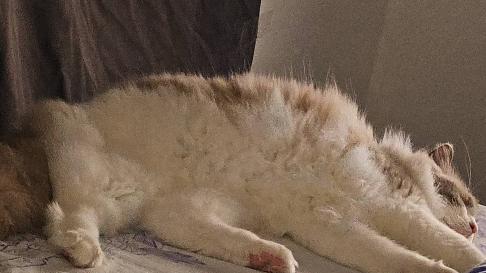Saury is a 3 years old Ragdoll. The saury was first in California and now in Toronto.
Other than breaking various glass cups and grabbing the sofa, Saury favorite thing is to chew on wires when my friends are playing video games. Many times when my friend play games with me, he has to avoid Saury from biting various wires.
Photo Gallery
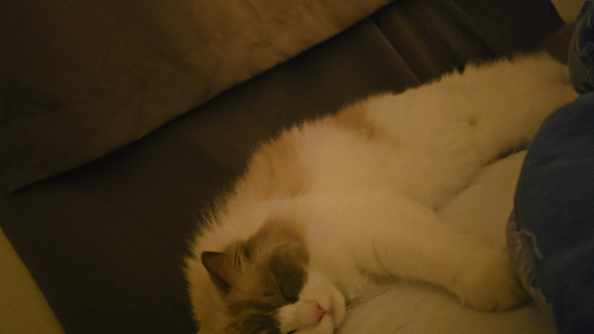 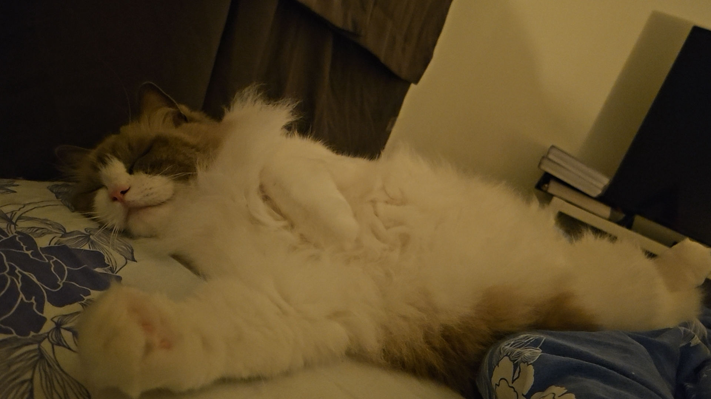Likes
- Sleeping
- Breaking cups
- Bite computer's wires
Koda
Koda is a 4 years old Corgi. Kodak is also a cute corgi that my best friend and his girlfriend raised together. My firend went to the graduate school in China, so now he's being raised by his girlfriend.
Koda the Corgi was a bundle of energy, known for his boundless enthusiasm and short, stubby legs. Every morning, he'd chase sunbeams around the living room, his fluffy tail wagging with pure joy. In the park, Koda's playful antics brought smiles to everyone's faces. His infectious spirit reminded everyone that happiness could be found in the simplest of moments. Koda, with his big, expressive eyes, was more than a pet; he was a source of endless love and laughter in his family's life.
Photo Gallery
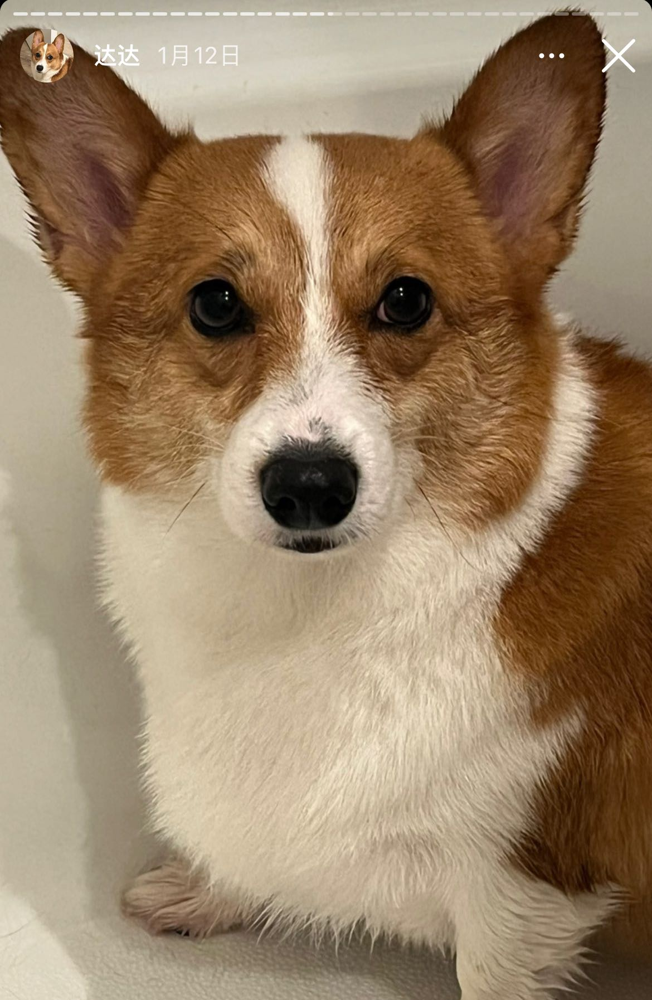 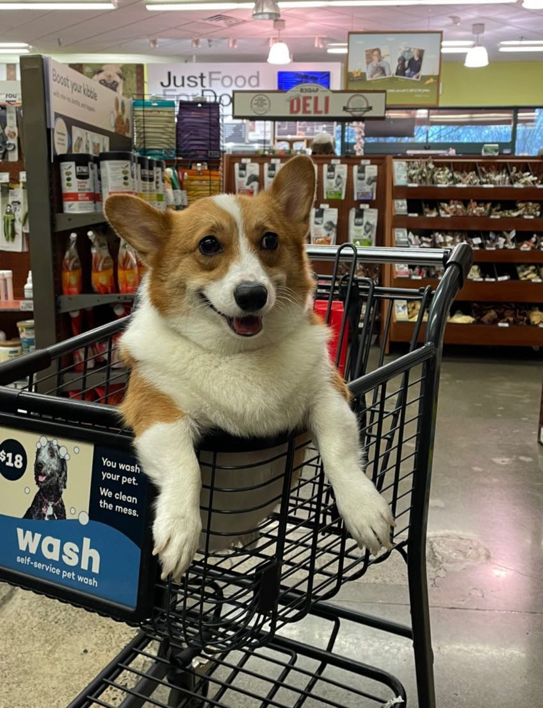Likes
- Enjoy snuggling
- Daily walks and exercise
- Sweet tooth for treats
BeefRoll
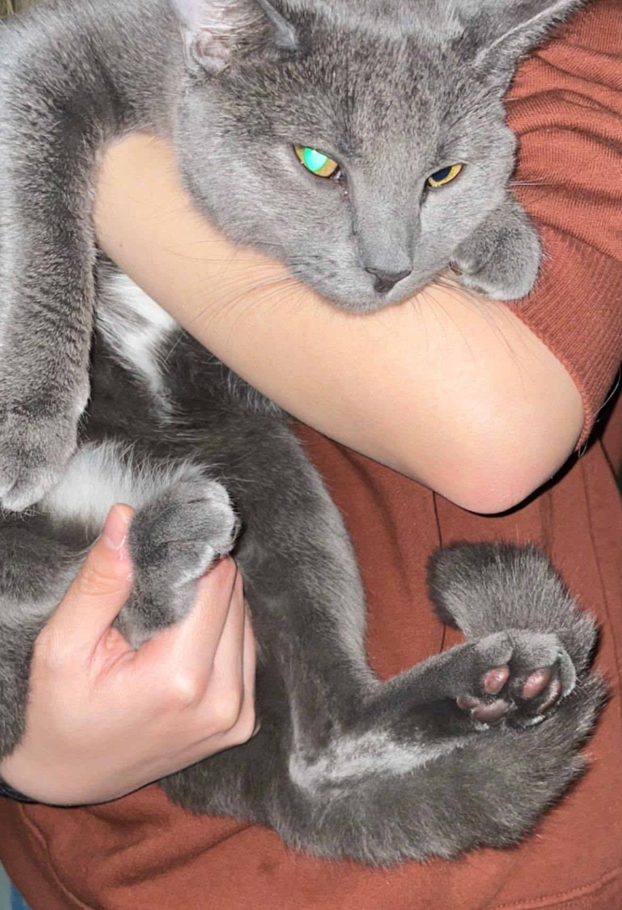Beefroll is a 4 year old cat. At that time, he took the initiative to walk into his current owner's home. His owner posted a notice in the community for a month, but no one claimed it. Finally, his current owner decide to adopted him.
Although his owner had no experience in raising cats, the day after she met Beefroll, she had him vaccinated and bought a lot of cat treats for fear that Beefroll would starve. Beefroll is named because his owner likes hot pot, and beef rolls are her favorite.
Photo Gallery
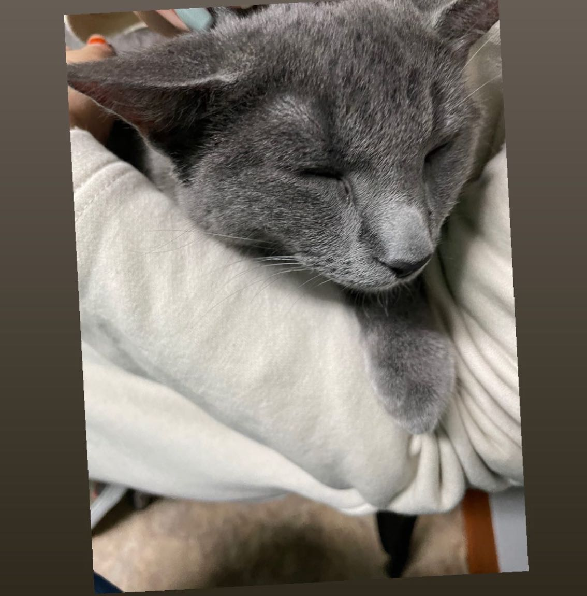 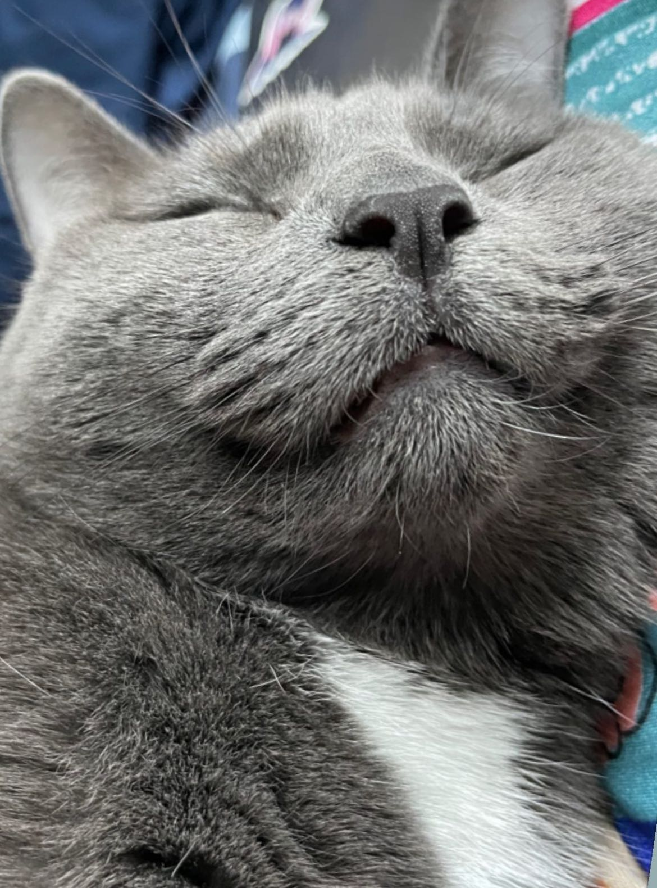Likes
- Enjoy Napping
- Grooming
- Climbing furniture and curtains
Piggy
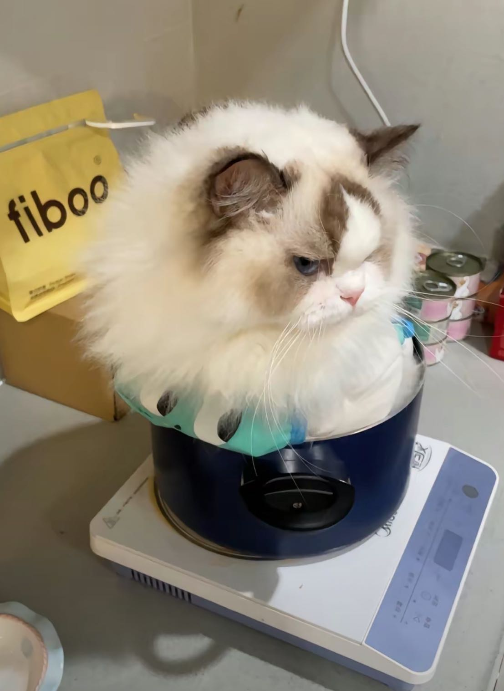Piggy is a 4 year old cat. Piggy is known for their gentle and docile nature. He always looks impatient or even angry, but in fact he has a very docile personality.
In a tranquil home, Bella the Ragdoll cat thrived. Her striking blue eyes and soft fur charmed all. Mornings meant cozy cuddles, afternoons playful antics, and evenings, shared serenity. Through seasons, Bella remained a source of warmth and companionship, making her the heart of the home.
Photo Gallery
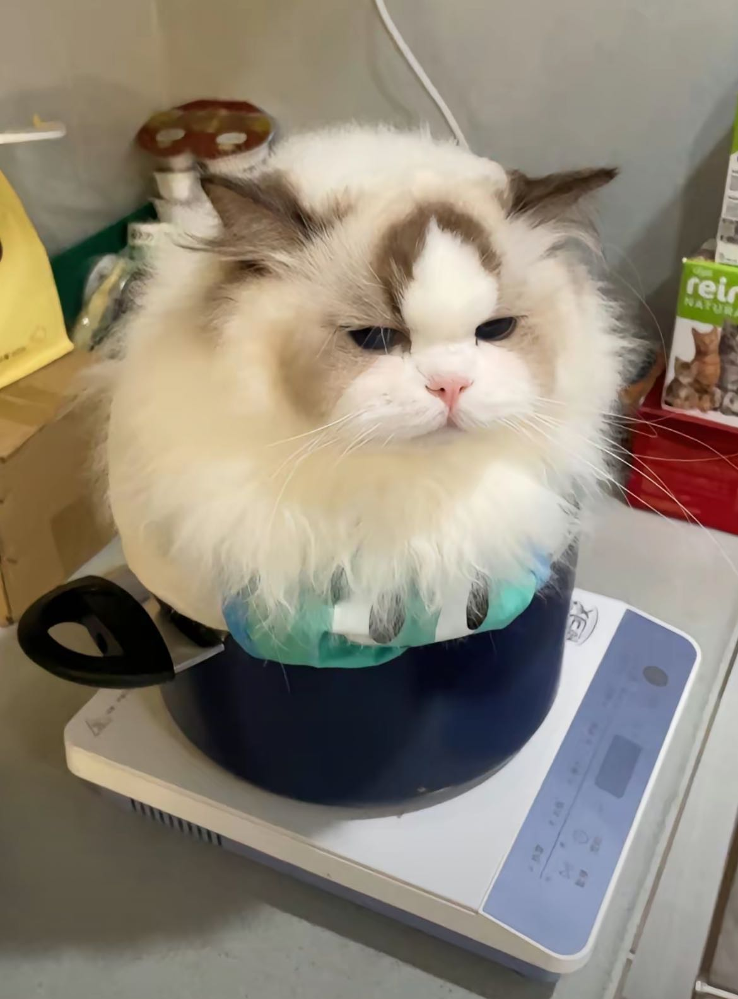 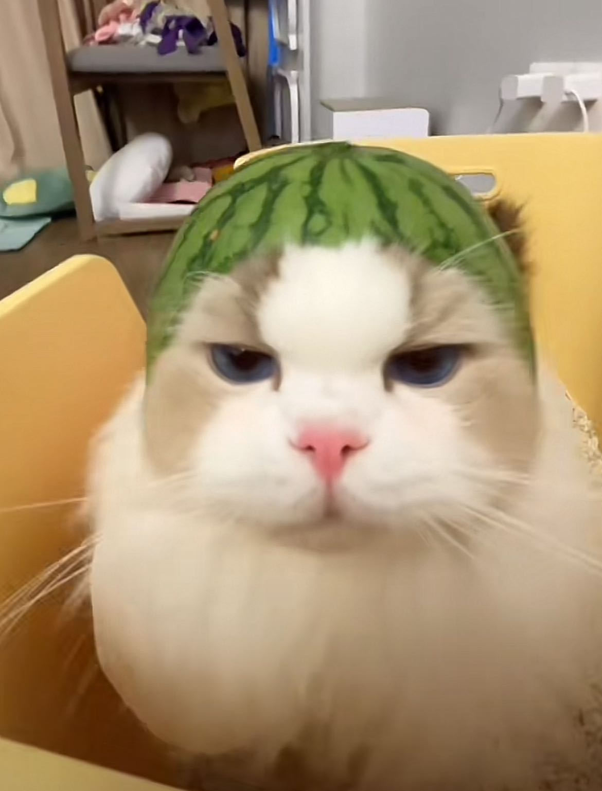Likes
- Being Angry
- Lounging on sofa
- Getting along well with other pets
Camel
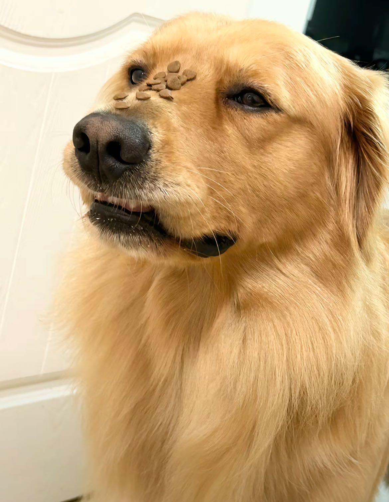Camel is a 3 year old Golden Retriever. His playful energy and love for fetch and outdoor adventures make him the ideal partner for all outdoor escapades.
Camel is a social butterfly, getting along famously with other dogs and people, just like a furry friend. He's a true family member, ever watchful, and ready to lend a listening ear (well, maybe a listening paw) whenever you need it.
Photo Gallery
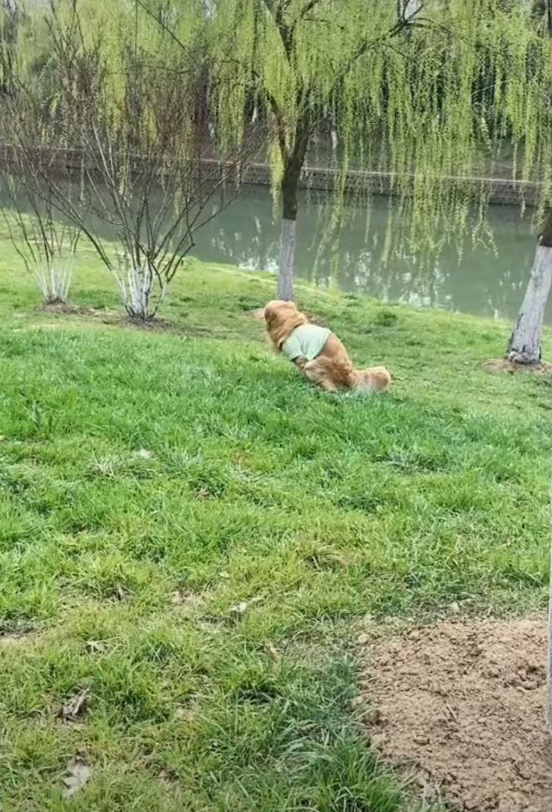Likes
- Swimming
- Playful "mouthiness"
- Collecting stones